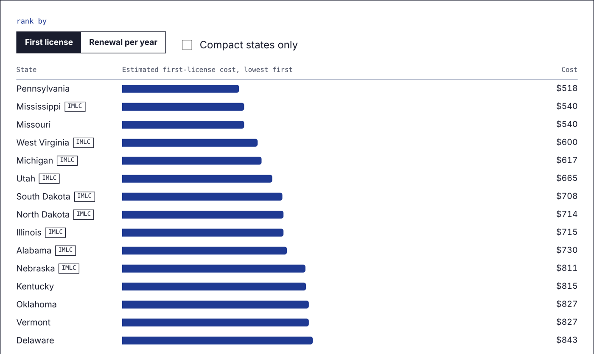

Medical license cost estimator
The question: what will it cost a telehealth physician to get licensed in a new state, and where should they apply first? I built the original pricing tools at Medspoke, a telehealth licensing company; this is that logic rebuilt as an interactive estimator and 51-state comparison.
Try the estimator →